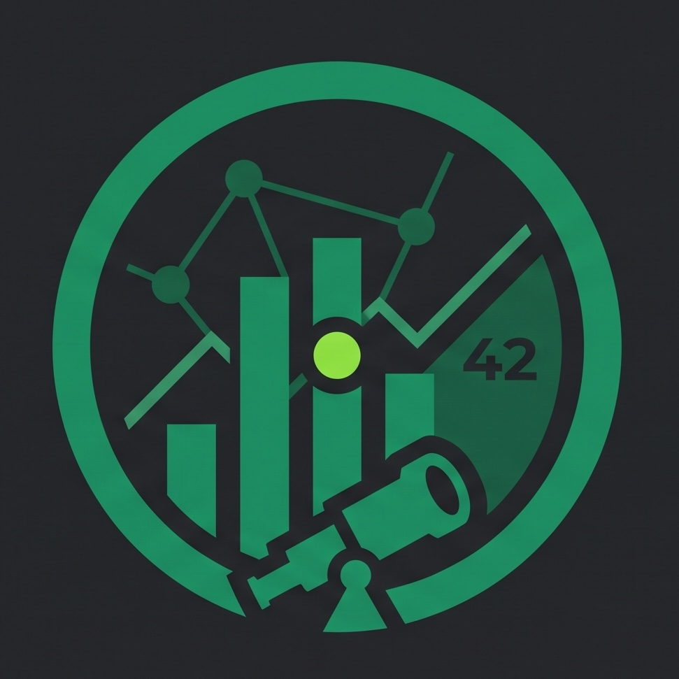

Zorgscope motion study 01
The signal is moving.
A quiet orbit says “monitoring.” During polling, the scan accelerates and the center emits a restrained red heartbeat. The mark itself stays steady and readable.
Interactive scanning-orbit logo demonstration

Monitoring · last refresh 2 min ago
Preview state
- 8 seconds
- Quiet ambient orbit
- 1.05 seconds
- Active poll + red heartbeat
- 650 milliseconds
- Decelerating finish
The outer SVG ring is independent of the raster mark. Production can therefore reuse the current logo unchanged. Reduced-motion mode preserves every state without rotation.